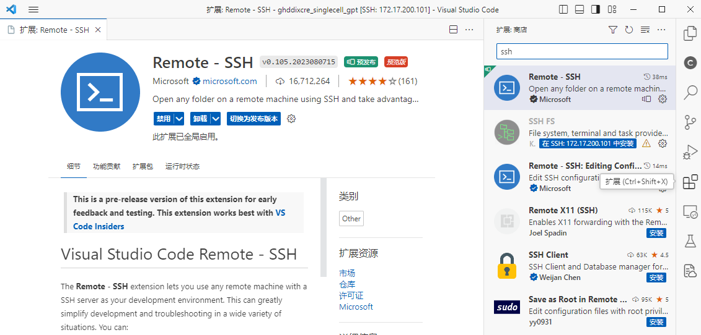
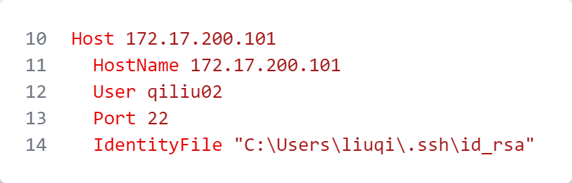
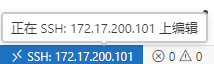
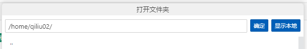
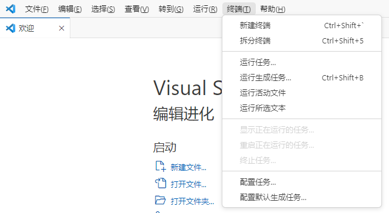
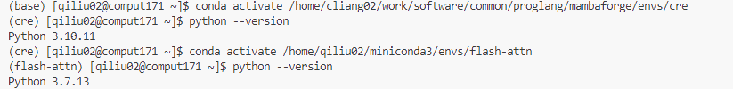

贡献
欢迎为本项目贡献自己的才智，例如扩展模型的应用场景和进行有针对性的改进。
对于GHDDI的同事
在cluster上已经搭建好了项目运行所需的环境，推荐直接在上面进行开发。
VS Code远程连接Cluster (推荐)
先下载VS Code，远程连接cluster，步骤如下：
下载VS Code: https://code.visualstudio.com/
打开VS Code, 点击侧边栏的扩展
搜索框中输入ssh, 下载Remote SSH，并配置服务器[2],
.ssh/config内容参考下图, 将其中的用户名(
qiliu02)改成自己的
在VS Code中连接远程服务器
点击侧边栏的”远程资源管理器”
连接刚才配置好的服务器，选择在当前/新的窗口打开
左下角显示已经连接后，选择侧边栏”打开文件夹”，打开cluster中想要创建项目的路径，或者已经存在的路径 后续就可以直接在cluster上进行开发了.




激活Conda环境
安装好VS Code和远程连接好Cluster后，下面安装conda，并激活scGPT的Conda env. 假如当前个人账号没有安装Conda的话，建议先安装[3]，如使用下面命令：
wget https://repo.anaconda.com/archive/Anaconda3-2023.07-2-Linux-x86_64.sh
bash ./Anaconda3-2023.07-2-Linux-x86_64.sh
101服务器上已经安装好了用于使用scGPT的环境, 可选Chen Liang (梁忱) 提供的环境(python3.10)：
Python解释器： /home/cliang02/work/bin/cre-python
Conda环境：/home/cliang02/work/software/common/proglang/mambaforge/envs/cre
或者Qi Liu (刘奇)提供的环境 (python3.7)：
Conda环境：/home/qiliu02/miniconda3/envs/flash-attn
新建Terminal后，可以输入命令激活：
conda activate /home/cliang02/work/software/common/proglang/mambaforge/envs/cre
# or
conda activate /home/qiliu02/miniconda3/envs/flash-attn
就切换到了我们运行scGPT的环境了.
注意：conda env中没有安装 scgpt，而是在项目中源码安装scGPT，这是为了随时保持最新和方便修改源码. 后面的预处理脚本用sys.path.append的方式引用了源码包，若有相关问题，可以联系Qi Liu.


参考